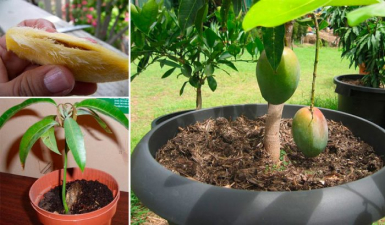
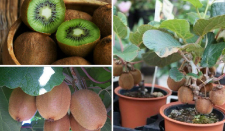
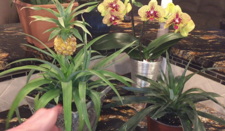

<section class="review__section" id="reviews">
    <div class="container">
        <div class="review__section-wrapper">
            <h2 class="review__section-title">
                Отзывы покупателей
            </h2>
            <div class="review__slider-wrapper">
                <div class="review__slider owl-carousel">
                    <div class="review__slide">
                        
                        <h3 class="review__title">
                            Владимир Мотылев, 45 лет
                        </h3>
                        <p class="review__text">
                            Заказал себе мини-деревья "Домашние деревья", потому что хочу быть уверенным в качестве фруктов, которыми я угощаю свою семью. Ко мне часто приезжают внуки в гости и они очень любят свежие фрукты. Сами деревья растут быстро, урожай стабильный. Претензий нет. Самое главное дешевизна фруктов. Раньше приходилось покупать в магазинах, теперь хватает даже на соседей.
                        </p>
                    </div>
                    <div class="review__slide">
                        
                        <h3 class="review__title">
                            Наталья Григоренко
                        </h3>
                        <p class="review__text">
                            Заказала набор "Домашние деревья". Уж очень хотелось попробовать самостоятельно выращивать фрукты. Мы с мужем любим попить чаю с лимоном, поэтому нам фруктовое деревце очень понравилось. Взяли два лимонных и два с киви. Здорово, что можно выбрать деревья. Растет на балконе в квартире круглый год. В летний период вместе со всей рассадой перевозим на
                            дачу. Очень удобно, а главное, что всегда есть под рукой свежие лимоны.
                        </p>
                    </div>
                    <div class="review__slide">
                        
                        <h3 class="review__title">
                            Анна Моисеева, 56 лет
                        </h3>
                        <p class="review__text">
                            Честно говоря, заказывая очень сильно сомневалась, что действительно вырастет, что-то путное. Но как оказалось, зря переживала.
                            Мини-деревья достаточно быстро выросли и начали давать плоды. Уже второй
                            месяц кушаем свежие мандарины и вкуснейшие груши. Смело
                            могу рекомендовать мини-деревья "Домашние деревья"
                        </p>
                    </div>
                </div>
                <div class="review__btns">
                    <button type="button" class="review__btn next__btn"></button>
                    <button type="button" class="review__btn prev__btn"></button>
                </div>
            </div>
            

            <button type="button" class="header__order-btn add__review">
                Написать отзыв
            </button>
        </div>
    </div>
</section>